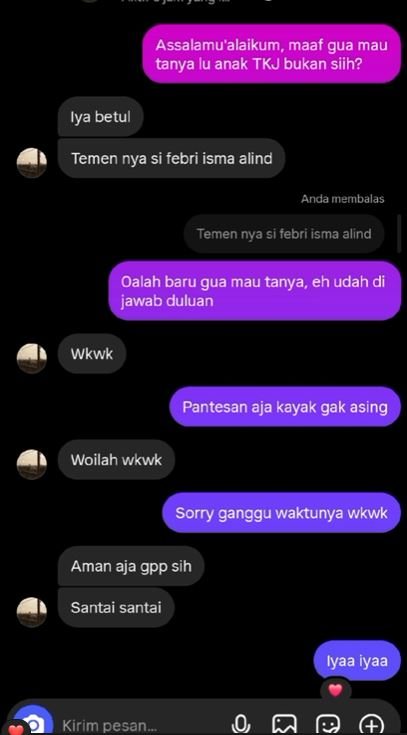

Bintang pertama
Awal Ketemu
Lucu ya awal ketemu kita dari DM instagram, aku pikir ada apa gitu tiba tiba di DM wkwkwkwk jujur aku pikir temen aku ada yang bikin masalah sampe ngabarin aku dan ternyata kamu cuman nanya masalah like wkwkwkwk XD
